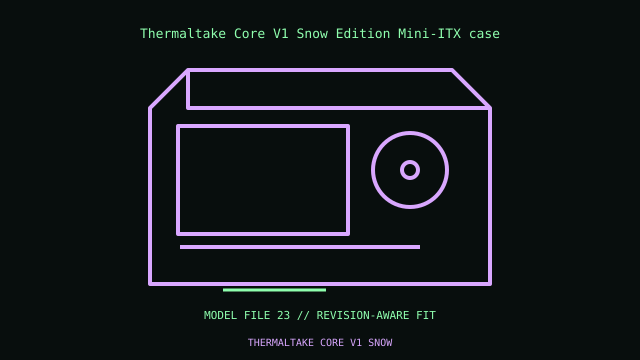

[ IDENTIFIED ENCLOSURE // SMALL-FORM-FACTOR CASES ]
Thermaltake Core V1 Snow Edition Mini-ITX case
276 × 260 × 316 mm W×H×D; cube chassis with interchangeable side panels. Mini-ITX; ATX PSU; GPU up to 285 mm; cooler up to 140 mm; 2-slot expansion.

VARIANT / ARCHIVAL CAVEAT: Snow Edition shares Core V1 internal geometry; panel orientation can change airflow/window placement. Confirm GPU clearance with 200 mm front fan fitted.
Mechanical specifications and fit
| Catalog identity / revision | Thermaltake Core V1 Snow Edition Mini-ITX case |
|---|---|
| Dimensions / construction | 276 × 260 × 316 mm W×H×D; cube chassis with interchangeable side panels. |
| Drive bays / storage | Two 3.5-inch and two 2.5-inch mounts; no external bay. |
| Board, system and compatibility | Mini-ITX; ATX PSU; GPU up to 285 mm; cooler up to 140 mm; 2-slot expansion. |
| Revision / service note | Snow Edition shares Core V1 internal geometry; panel orientation can change airflow/window placement. Confirm GPU clearance with 200 mm front fan fitted. |
Preservation and installation notes
Measure the selected GPU, riser, PSU cables and CPU cooler together in the documented layout; compact-case clearance maxima usually trade against each other.
- Photograph the complete model label, assembly revision and option identifiers before opening; keep matching covers, brackets, shields, trays and fasteners together.
- Match riser revision, slot thickness and PSU form factor before assembly, then check panel closure without forcing cables or connectors.
Manufacturer manuals and model-specific sources
- Thermaltake Core V1 Snow Edition Mini-ITX case manual and service documentationModel-specific manufacturer specification, owner/service manual or technical reference; verify exact model and revision.
Where normalized dimensions or option-specific limits are not published, the record states that limitation rather than asserting a generic fit. Verify the cited manual revision against the specimen.